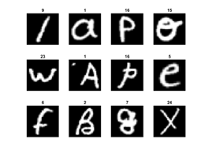

Optical Character Recognition
Optical Character Recognition from the handwritten EMNIST dataset.
Optical Character Recognition is the process of converting handwritten text into machine-encoded text through mediums such as documents, written papers, or images. Developing automated methods for this using machine learning and deep learning of large datasets is important for producing AI models that can appropriately recognise and convert this text. In this work, we aim to compare varying classification models for their efficiency and accuracy in creating an AI model for Optical Character Recognition. This has many uses such as data entry in transcribing written records into a digital form.

The EMNIST dataset is a collection of 26,000 images. The format of this data is 26,000 28x28 pixel images with each pixel represented by a numerical value. Each image is also provided with a corresponding label as to the correct digital character that the handwritten image refers to. Data is provided as a 1x784 vector and variable labels stored as a column vector. We convert the images into a double type so that it can be scaled accurately unlike an integer. We also convert the labels into a categorical array for further processing. The data is split into training and testing subsets to avoid overfitting. A random permutation of the 26,000 images is created and used to make a 50/50 split of training and testing subsets.
The results can be seen in the following table:
| Classification Model | Time of Processing (s) | Correct Predictions (/13k) | Accuracy (%) |
|---|---|---|---|
| KNN Custom Euclidean | 424 | 9,496 | 73.05 |
| KNN Custom Manhattan | 423 | 9,202 | 70.78 |
| KNN Matlab | 21.5 | 10,096 | 77.66 |
| SVM Matlab | 41.3 | 9,518 | 73.22 |
The Custom KNN model is far slower to process than the built-in functions which is to be expected as pre-built functions are optimised in machine code already without the need for compilation or interpretation. The distance measures have very similar time of processing. Manhattan is quicker as it doesn’t need calculating of square numbers however this is a large dataset, and this advantage doesn’t apply. The MatLab KNN is ~20 times quicker and has a greater accuracy making it more efficient and better. SVM has a slower processing time as it classifies the entire data which takes a lot of time on the dataset. This is also not rewarded as the accuracy is less. SVM is often used for text-processing and is efficient on small datasets, so this observation is expected on a large dataset.
In conclusion, our study shows that the K-nearest neighbour classification model is both the most efficient and accurate algorithm for correctly classifying these handwritten images. KNN is very good for implementing on multiclass models however it can be slow on large datasets and struggle with imbalanced data. An accuracy of 77.66% is not good enough for making this OCR model viable in commercial use and so further testing and training of other models is important for increasing these numbers. Further evaluation could also be done to recognise areas of weakness. For example, looking at the confusion charts we see the models have issues with distinguishing between the letter I and L.
Code, Data and Charts:
Reading the Data: Here we can see the confusion charts of the four models. The x and y axis are the Predicted Class and True Class
respectively. The blue diagonal line we can see indicates our successful matches of characters where our model
correctly predicted a hand-drawn letter and matched it to the correct class.
The other boxes also indicate matches but these are incorrect matches. The higher the gradient of orange means the more
incorrect matches. We can see these in places we might expect. For example with the KNN with Euclidean Distance model
we see True 12 is predicted as class 9. In real terms the model predicts that the letter 'l' is the letter 'i' and vice
versa.
Here I include my code from MatLab:
load dataset-lettersfeatures = dataset_images;labels = dataset_labels;key = dataset_key;%2: Datasetfigure(1), colormap gray;for i = 1:12 %For loop of all 12 imagessubplot(3,4,i);im = reshape(features(i, :), [28,28]);imagesc(im), axis offtitle(key(labels(i, :))); %Subtitle each subplotendsaveas(gcf, "Dataset.png");%3: Data Preparationimf = double(features);iml = categorical(labels); %Categorical array for labelsrandp = randperm(26000);trfeatures = imf(randp(1:13000), :);tefeatures = imf(randp(13001:end), :);trlabels = iml(randp(1:13000), :);telabels = iml(randp(13001:end), :);%4.1: Model Training with K-NNprediction1 = categorical.empty(size(tefeatures, 1), 0);prediction2 = caegorical.empty(size(tefeatures, 1), 0);k = 28; %Set k parameterfor i = 1:size(tefeatures, 1) %Loop for Euclidean Distancecomp1 = trfeatures;comp2 = repmat(tefeatures(i, :), [size(trfeatures, 1), 1]);l2 = sum((comp1-comp2).^2, 2); %Euclidean Distance[~, ind] = sort(l2);ind = ind(1: k);labs = trlabels(ind);prediction1(i, 1) = mode(labs);iendfor i = 1:size(tefeatures, 1) %Loop for Manhattan Distancecomp1 = trfeatures;comp2 = repmat(tefeatures(i, :), [size(trfeatures, 1), 1]);l1 = sum(abs(comp1-comp2), 2); %L1 Distance[~, ind] = sort(l1);ind = ind(1: k);labs = trlabels(ind);prediction2(i, 1) = mode(labs);iend%4.2: Model Training with existing modelsknnmodel = fitcknn(trfeatures, trlabels);predictedknn = predict(knnmodel, tefeatures);svmmodel = fitcecoc(trfeatures, trlabels);predictedsvm = predict(svmmodel, tefeatures);%4.3: Evaluationcorrect_knn1 = sum(telabels == prediction1)correct_knn2 = sum(telabels == prediction2)correct_knnmodel = sum(telabels == predictedknn)correct_svmmodel = sum(telabels == predictedsvm)accuracy_knn1 = correct_knn/size(telabels, 1)accuracy_knn2 = correct_knn2/size(telabels, 1)accuracy_knnmodel = correct_knnmodel/size(telabels, 1)accuracy_svmmodel = correct_svmmodel/size(telabels, 1)figure(2)subplot(2,2,1);knn1CM = confusionchart(telabels, prediction1);title("KNN with Euclidean Distance");subplot(2,2,2);knn2CM = confusionchart(telabels, prediction2);title("KNN with L1 Distance");subplot(2,2,3);knnmodelCM = confusionchart(telabels, predictedknn);title("MatLab KNN");subplot(2,2,4);svmmodelCM = confusionchart(telabels, predictedsvm);title("MatLab SVM");saveas(gcf, "Results.png");